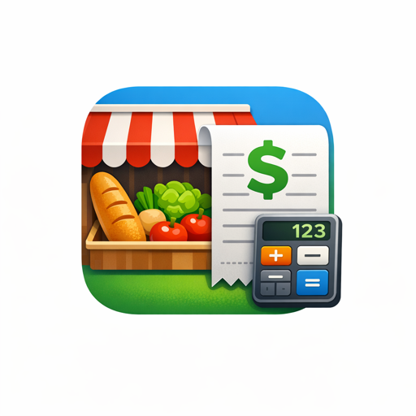

Ventas rápidas
Productos, servicios, descuentos, recargos y medios de pago mixtos sin perder control.
Sistema Pro · Gestión lista para usar
Ventas, stock, caja, servicios, productos, cuenta corriente, clientes y reportes en una sola app web. Sin instalaciones pesadas y preparada para usar desde celular, tablet o computadora.
1 día de prueba gratis. Promo de lanzamiento con cupos limitados.

Sistema Pro
Ventas del díaVenta mixta
MP + efectivoServicio
Comisión listaCierre Z
Separado por medioPensado para vender todos los días
Sistema Pro está pensado para negocios reales: los que venden rápido, cobran con varios medios de pago, necesitan controlar caja y no pueden perder tiempo buscando datos entre cuadernos, planillas o mensajes sueltos.
Funciones principales
El foco está en que vender, cobrar, cerrar caja y revisar el negocio sea claro incluso cuando hay ventas mixtas, deuda, servicios o productos.
Productos, servicios, descuentos, recargos y medios de pago mixtos sin perder control.
Precios, costos, mayorista, alertas, imágenes de productos y búsqueda cómoda.
Apertura, cierre, efectivo, tarjeta, Mercado Pago, gastos y detalle para imprimir.
Deudas, pagos parciales, historial claro, DNI/CUIT y contacto directo por WhatsApp.
Servicios, barberos, comisiones por servicio, productos, clientes y estética propia.
Dashboard, historial de ventas, caja, gastos, proveedores y datos para decidir mejor.
Rubros ideales
La base multirubro permite adaptar la operatoria sin construir desde cero. Para salir a vender, estos son los rubros donde más valor puede dar desde el día uno.
Ventas rápidas, stock, proveedores, gastos, caja diaria y cuenta corriente.
Servicios, productos, comisiones, clientes, caja y reportes del equipo.
Productos pesables, precios por kilo, caja y control de artículos vendidos.
Un punto de venta simple para dejar de depender de anotaciones dispersas.
Promo de lanzamiento
La promoción se muestra antes de pagar y se administra desde el panel interno, así podemos ajustar condiciones sin tocar código.
Para entrar, mirar el sistema y validar si encaja con el comercio.
Durante los primeros 3 meses. Equivale al 40% OFF de lanzamiento.
Monto fijo por 1 año para comercios 1 al 15, sujeto a cupos disponibles.
Para probar con acompañamiento
Cómo lo probamos
Se crea el usuario, el negocio y el modo que corresponda: kiosco o barbería.
Productos, servicios, barberos, clientes o proveedores según el rubro.
Se revisan caja, medios de pago, cuenta corriente, reportes y cierre diario.
Lo que surja del uso real se ordena y se prioriza para seguir mejorando.
Preguntas frecuentes
No. Es una app web: se usa desde navegador en celular, tablet o computadora.
Sí. Tiene modo kiosco/multirubro y modo barbería con servicios, barberos y comisiones.
Sí. Maneja efectivo, tarjeta, Mercado Pago y cuenta corriente, incluso combinados.
Se evalúa como mejora. La base ya está funcionando, y los ajustes se priorizan con cuidado.
Probalo con tu comercio
Escribime por WhatsApp y vemos el rubro, qué necesita cargar primero y cómo hacer una prueba ordenada sin interrumpir el trabajo del local.